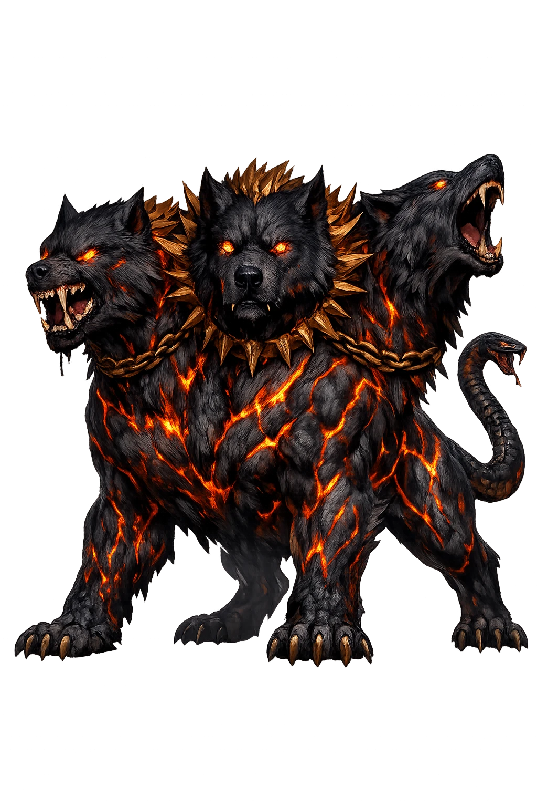
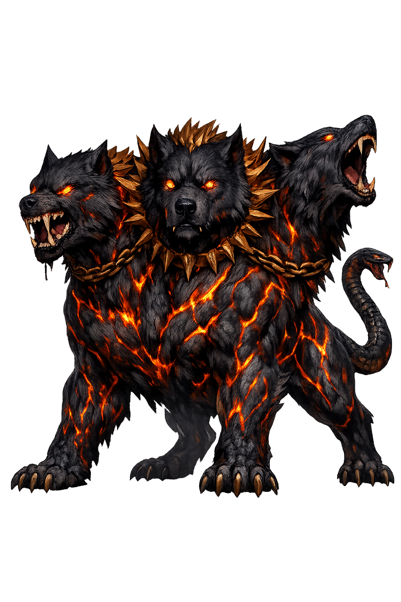

The Authentic Orthography
Underworld Guardian · The Hound of Hades · Warden of the Dead

Unicode restoration and ASCII comparison
Κέρβερος
The name in its original Greek form. Kérberos (Κέρβερος) is attested in the source tradition — “Spot, darkness”. Its acute accents carry the full phonetic and orthographic weight of the source tradition.
cerberus
Reduced to plain cerberus, the name loses everything that made it specific: acute accents. What remains is an ASCII string that machines can parse but that no longer speaks with its original voice.
Kérberos
The Unicode restoration recovers what ASCII flattened. Kérberos restores acute accents, returning the name to its original written dignity. The domain encodes to Punycode, but the browser displays the truth.
Kérberos.com → xn--krberos-bya.com
The non-ASCII characters in Kérberos are encoded while the ASCII remains visible. To the DNS, it is Punycode. To humanity, it is Kérberos.
How Kérberos is preserved in writing
A bespoke provenance study for Kérberos is being prepared by the PUNICODEX scholarly team.
Contribute scholarly provenance →Owned, ideal, and ASCII forms of Kérberos
Kérberos
Restores Κέρβερος. The live temple domain — kérberos.com.
cerberus
Flattens Κέρβερος. The plain ASCII fallback — what DNS and legacy systems see.
How Kérberos was spoken
The Fifty Heads, the Brazen Voice, and the Gate of No Return
Kérberos is the watch-dog of the dead: Hesiod's brazen-voiced, fifty-headed hound of Hades, who fawns on every soul that enters and devours any that tries to leave — the boundary of the underworld made flesh, fur, and teeth.
Hesiod's count in the Theogony; the painters usually settle for three, and the poets keep multiplying.
Chalkéophōnos — bronze-throated: the bay of the underworld that the poets heard as metal.
The twelfth labor: dragged to the daylight without weapons, shown to Eurystheus, and taken home again.
He stands inside the doors of Hades — welcome laid out for the entering, ruin for the leaving.
Stories of Kérberos
Kérberos' myths are the myths of every threshold that must not be crossed — and of the handful of heroes who crossed his anyway.
Hesiod sets him in the monstrous brood of Typhon and Echidna (Theogony 306-312): Orthrus the hound of Geryon, then "Cerberus the flesh-eater, the brazen-voiced hound of Hades, fifty-headed, shameless and strong," and after him the Lernaean Hydra and the Chimaira. The family is the underworld's kennel and armory in one: wherever the myths need an impossible guardian, one of Echidna's children is already on duty.
Later in the same poem (Theogony 767-773) Hesiod gives the hound his job description: he waits before the houses of Hades and dread Persephone, and on those who come in he fawns with his tail and both ears — but he lets none go back out; he watches, and devours whomsoever he catches passing the gates. It is the earliest full portrait of the boundary's one-way logic: courtesy inward, annihilation outward.
The last and hardest labor set by Eurystheus was to bring the hound up from the dead. Apollodorus (Library 2.5.12) tells it plainly: Heracles descended, asked Hades for the dog, and was given leave to take him if he could master him without weapons. Wrapped in the lion's skin, he throttled Kérberos until the hound yielded, led him up, and showed him to Eurystheus — who hid in his storage jar — then dutifully carried him back down again. Homer already knows the tale: the Iliad and the Odyssey both remember the fetching of "the hound of the loathed king of the underworld."
Music succeeded where force was not asked to try: in Virgil's Georgics (4.483) Orpheus' song holds Kérberos gaping, his three mouths stilled, as the poet walks Eurydice's path. A generation of readers later, the Aeneid (6.417-423) gives the Sibyl the practical method — a cake sopped in honey and soporific grains tossed into the three ravenous throats. Force, song, and pastry: the three keys the tradition cuts for the one lock the dead cannot pick.
Kérberos is courteous to everything that accepts the terms and merciless to everything that argues with them. Every threshold worth having — a discipline, a vow, a border of the self — keeps some form of him: the part of the gate that cannot be reasoned with, because reasoning is not its job. The question he asks every visitor is the simplest one: are you here to stay, or are you here to leave — because only one of those is offered.
Enter Extended Lore